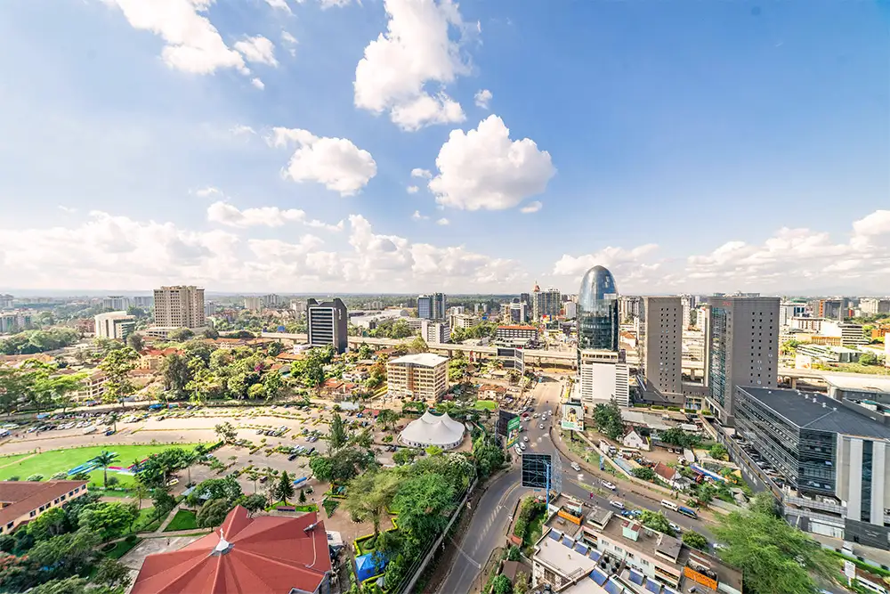
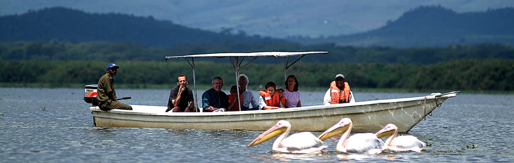
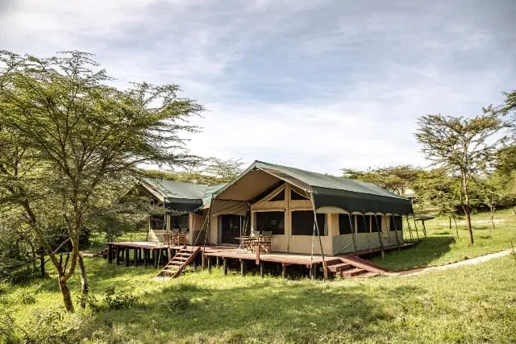
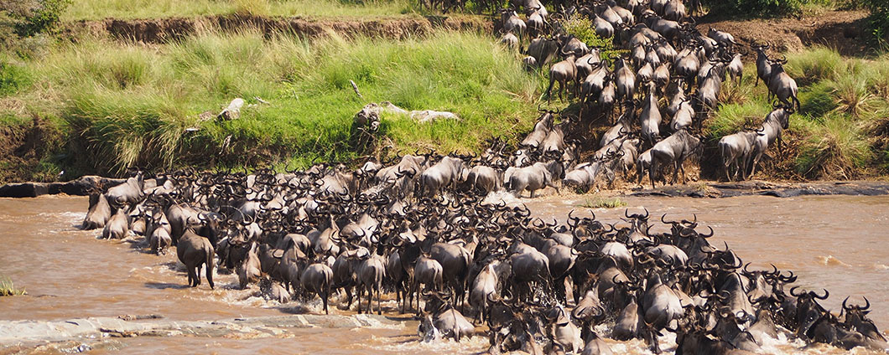

Itinerary
6 Days Naivasha / Masai Mara Private Safari — Axis Africa Safaris
Day 1 · Arrival in Nairobi

All seven travelers land in Nairobi throughout the morning. Check in and rest — it's Day 1 of the adventure! That evening, we also celebrate Sundar & Sweta's 3rd wedding anniversary 🎉 with a special dinner.
🏨 Hyatt Place Nairobi WestlandsDay 2 · Nairobi → Naivasha

Morning pick-up, brief safari orientation, then drive to Lake Naivasha via the breathtaking Great Rift Valley viewpoint (≈3 hrs). Afternoon sunset boat ride among hippos and a walk on Crescent Island.
🏨 Lake Naivasha ResortDay 3 · Naivasha → Masai Mara

After breakfast, a scenic 5-hour drive through rolling green plains into the Maasai Mara. Check into camp inside the Ol Kinyei Conservancy, then an afternoon game drive followed by a night game drive to spot nocturnal wildlife.
🏕️ Porini Mara CampDay 4 · Game Drives at the Conservancy

A full day exploring Naboisho and Ol Kinyei Conservancy at your own pace. Game drives guaranteed throughout the day and evening — no crowds, pure wilderness.
🏕️ Porini Mara CampDay 5 · Masai Mara Extended Game Drive

Early breakfast then a game drive en route to Ashnil Mara Camp. After check-in and lunch, an afternoon drive through the Masai Mara National Park hunting for the Big Five — lions, elephants, leopards, buffalo, and rhino.
🏕️ Ashnil Mara CampDay 6 · 🎈 Hot Air Balloon + Full Day Drive

06:15 — Balloon takes off at dawn for a 1-hour flight over the Mara. Bird's-eye view of the Great Rift Valley, followed by a champagne breakfast in the bush.
Then a full day game drive through the heart of the Mara — vast herds of wildebeest and zebras, possible Mara River crossing (July–September season), picnic lunch on the savanna.
🏕️ Ashnil Mara CampDay 7 · Maasai Village + Return to Nairobi

After breakfast, an immersive visit to a traditional Maasai village — vibrant traditions, intricate beadwork, dances and songs. Check out ≈9:00 am, then drive back to Nairobi. All flights depart Nairobi in the late evening.
✈️ Departure Night